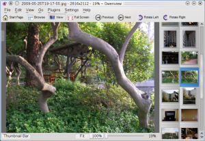
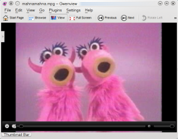
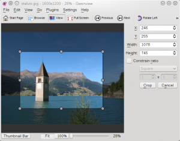

public: yes
tags: ["Gwenview","KDE","video","thumbnails","crop"]
title: "New features of Gwenview in KDE 4.3 I haven't blogged about"
I have been lagging quite a bit as far as blogging about Gwenview is concerned. In this post I present the most important new features introduced in the KDE 4.3 version of Gwenview which I haven't blogged about yet.
Vertical Thumbnail Bar
Quite a few people have been asking for the ability to orient the thumbnail bar vertically. This is now possible, as well as defining how many rows/columns should be displayed:

Video Support
Gwenview 1.4 was able to playback videos. This is nice when you occasionally record a video together with your photos. Thanks to Phonon, video playback is back:

The thin progress bar at the bottom of the view goes away when you move the mouse out of it. I wanted to make it transparent, but could not find out how to have transparent widgets on top of a video. If you know something about this, please enlighten me!
Crop
In Gwenview 2.2, starting a crop turned the sidebar into a crop sidebar. This was a bit inconvenient if the sidebar was off when you started the crop because in this case the sidebar would pop up, reducing the zoom level if the zoom was in zoom-to-fit mode.

The crop in Gwenview 2.3 now uses a nice crop hud widget. The crop widget tries hard to stay out of the way, as can be seen in this short screencast:
Original video
Additionally, the crop ratio gained the ability to use the ratio of your monitor, so that you can easily crop photos to create a wallpaper or a slideshow screensaver.
{kind=link}
{kind=link}
{kind=link}